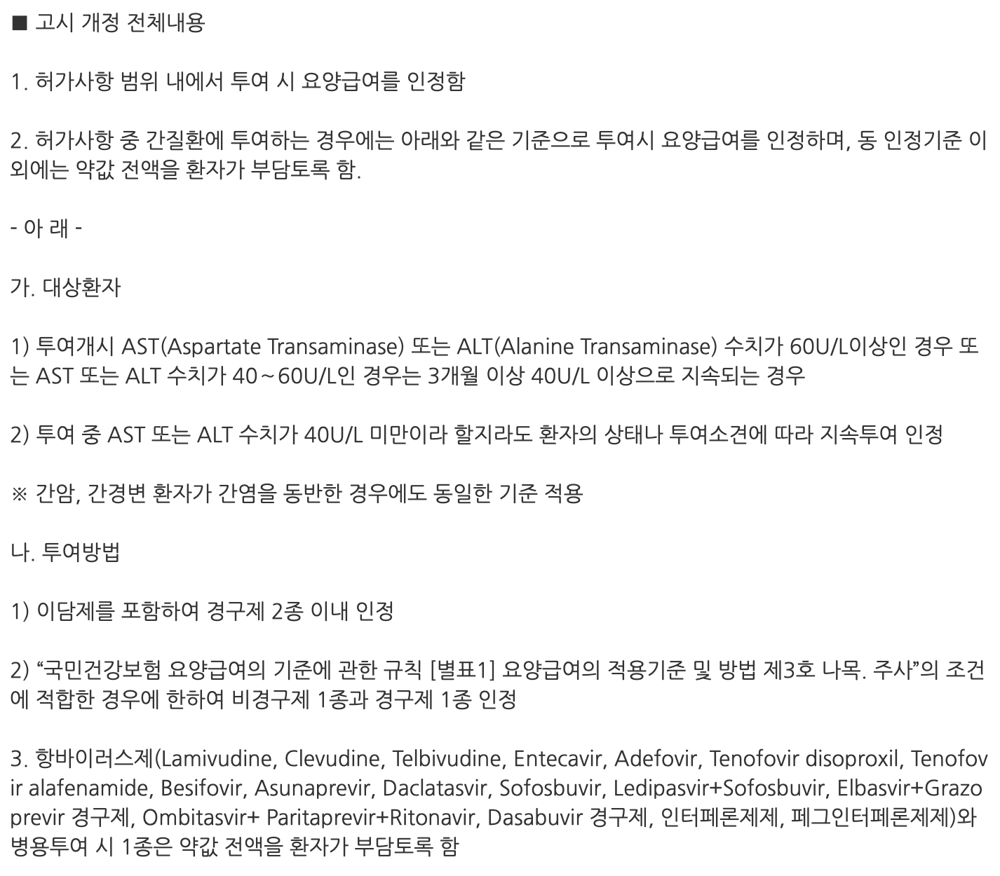

진해거담제-보험인정기준 2013

PMHx : HTN/DM/Tb/Hepatitis(-/-/-/-)
medication hx (-)
Allergy (-) (ex. drug, food, ect)
알레르기가 있는 경우 반드시 사전에 말씀하셔야 함을 설명드림
Alcohol/smoking (-/-)
- F/C (-/-) C/S/R (-/-/-) sore throat (-) headache (-)
- N/V (-/-) neck stiffness (-)
- travel hx
- PTH/PI (-/-)
- RHB s m, SBS s c,w
- medication X days
- antibiotics
- NSAID IM
* J00 급성 비인두염[감기]
* J20.9 상세불명의 급성 기관지염
* J30.4 상세불명의 알레르기 비염
* K29.7 상세불명의 위염
* J03.9 상세불명의 급성 편도염
* J32.9 상세불명의 만성 부비동염
- 혈압
- RHB s m
- 혈당
- TC/TG/LDL
- ARB, CCB, thiazide
- 검사일정
* 매년 피검사(공복혈당, 콜레스테롤, Hb, E-, uric acid)/소변검사/심전도
* 필요시 echo, spot urine microalb, carotid sono, abd sono
* 금연,금주,운동,균형잡힌식사 중요성 설명드림
* I109 상세불명의 고혈압
- 혈당
- 몇년, A1c
- Total/TG/LDL(y)
- Cr, mircoalbuminuria(y)
- 잘보여요?
- 발 문제 없나요?
- RHB s m
- ARB, CCB, thiazide
- metformin, DPP4, SU, SGLT2, TZD
- thioc, pregabalin
- aspirin
- 검사 일정
* 매년 피검사/소변검사/심전도, 안저검사
* 발 저림/감각이상/무감각/화끈거림/통증/궤양 골치아프다
* 백신 : 인플루엔자, 폐렴사슬알균, B형간염
* 흡연하지 말 것의 중요성 설명드림
* 혈압, 당뇨, 콜레스테롤 3형제를 함께 감시해야 함을 설명드림
* E119 합병증을 동반하지 않은 인슐린-비의존 당뇨병
* E1140 다발성 단일신경염을 동반한 인슐린-비의존 당뇨병
* E1150 당뇨병성 말초혈관병증을 동반한, 괴저를 동반하지 않은 인슐린-비의존 당뇨병
* G632 당뇨병성 다발신경병증
- 혈압, 혈당
- 몇년, A1c
- Total/TG/LDL(y)
- Cr, mircoalbuminuria(y)
- 잘보여요?
- 발 문제 없나요?
- RHB s m
- metformin, DPP4, SU, SGLT2, TZD
- thioc, pregabalin
- aspirin
- 검사 일정
* 매년 피검사/소변검사/심전도, 안저검사
* 발 저림/감각이상/무감각/화끈거림/통증/궤양 골치아프다
* 백신 : 인플루엔자, 폐렴사슬알균, B형간염
* 흡연하지 말 것의 중요성 설명드림
* 혈압, 당뇨, 콜레스테롤 3형제를 함께 감시해야 함을 설명드림
* 필요시 echo, spot urine microalb, carotid sono, abd sono
* 금연,금주,운동,균형잡힌식사 중요성 설명드림
* I109 상세불명의 고혈압
* E119 합병증을 동반하지 않은 인슐린-비의존 당뇨병
* E1140 다발성 단일신경염을 동반한 인슐린-비의존 당뇨병
* E1150 당뇨병성 말초혈관병증을 동반한, 괴저를 동반하지 않은 인슐린-비의존 당뇨병
* G632 당뇨병성 다발신경병증
- 어디가:
- 어떻게:
- 지속시간:
- 중등도 이상의 통증인가:
- 오심/구토:
- 빛공포증/소리공포증:
- 두통이 올 것인지 미리 알수 있나요(전조):
* 기간이 중요, 아급성기침(3-8주)은 감염후 기침이 가장 흔하다
- 상기도기침증후군 (UACS)
- (기침형)천식 or 비천식성호산구기관지염(NAEB)
- 위식도역류질환
- R/O 결핵, 폐렴, 폐암
# Chest X-ray, PNS series
# PFT
# EGD
## Chest CT
- Rhinoebastel (Ebastine/Pseudoephedrine) 1C #1: 저녁식후 30분 복용
- Budesonide, Formoterol [Symbicort turbuhaler 160/4.5mcg] - 경증천식까지 급여 확장됨 (2019.11), 하지만 폐기능검사 없이 쓰기는 좀 그렇다
- Montelukast (Singulair 10mg) 1T #1 (저녁식후 30분) or Pranlukast (Onon cap. 112.5mg) 4C #2
- PPI (아침 식전 1시간)
* R05 기침 Cough
# 젊은 여성, 6개월 기침, 이렇게 evaluation하다 chest CT를 늦게 찍은 적이 있었다. Trachea에 mass발견. 드물지만 이런경우도 있다
* Generalized edema : 전신질환
- Liver cirrhosis
- Heart failure
- Kidney problem
- Drug : CCB, TZD, dopa agonist (파킨슨약)
* Localized edema : 혈관계이상
- Venous insufficiency - unilateral, 밤동안 호전되기도
- Hypothyroidism - myxedema, 얼굴(특히 눈 아래), 손, 하지, 발
- Lymphedema - 주로 암치료후 림프절 손상 후 발
* 갑자기 특별한 원인이 없이 한쪽 다리가 붓는 경우 DVT 를 감별해야 함
* evaluation
# CBC, LFT, BUN/Cr, E-, LFT, TFT
# d-dimer
# UA
# CXR, EKG
## Echo
## Abd sono
## Thyroid sono
## Lower ext. doppler or CT
* Dichlozid 1t qd → 효과없으면 증량
: U/A, E-, BUN/Cr f/up 필요
* I60.9 상세불명의 부종, 수액정체 NOS
- 다친적
- 약물
- 최근에 감기? : 3mm이하 작은 출혈이 하지에 집중적으로 생김
- 동반증상 : 잇몸출혈, 혈뇨, 월경과다, 혈변, 발열, 체중감소, 전신피로, 호흡곤란
- CBC(혈소판)
- PT, aPTT(혈액응고인자)
- LFT panel(간기능)
- ESR, CRP(염증수치)
♦ 사소한 충돌에도 멍이 잘 든다면 위의 사항을 확인해 볼 필요는 있다. 하지만 문제가 없고, 동반증상이 없다면 너무 걱정할 필요는 없다.
- 기능성 소화불량
- 소화성 궤양
- 위식도역류
- 악성종양
- 약물에 의한 소화불량
# 위내시경
# 복부초음파
* K30 소화불량
* K29.7 상세불명의 위염
기간 : 2주 (급성), 2-4주 (지속성), 4주 (만성)
피나 끈적끈적하게 나오는가 (-)
fever/nausea/vomiting : (-/-/-)
여행력 :
섭취한 음식 :
soft & flat
Hyperactive BS
Td/RTd (-/-)
stool exam + OB : 지속성인 경우
* 염증성 설사가 의심되는 경우 loperamide는 투여금지
* dioctahedral smectite (스멕타) : 그 자체는 흡수가 안되고 장내의 여러 물질들을 흡착하여 장밖으로 배출하면서 설사는 멎게 한다.
- 복용중에 변비가 생길 수 있는데, 복용을 중단하면 곧 사라진다.
- 같이 처방한 다른 약도 흡착하여 소화흡수시키지 않고 변으로 끌고 나가버리기 때문에 스멕타는 다른 약 복용 최소 30분에서 1시간 전에 복용하도록 반드시 복약지도를 해야 한다.
* 노르믹스(rifaximin) : 위장관에서만 작용하는 항생제, 5일동안만 된다.
* K52.9 상세불명의 비감염성 위장염 및 결장염
AST/ALT
ALP
bilirubin
PT
protein/albumin
HBV/HCV
Alcohol
Medication
건강식품, 한약
보통 잘 먹지 않는 음식
Obesity-related
Liver CT
Autoimmune
Wilson
Hemochromatosis


- 10분 - 2시간 이내
- 처음에는 입 주위나 얼굴에 따끔거리는 느낌
- 두드러기, 소양감, 홍조, 부종
- 입술이나 혀에 혈관부종
- 목젖을 중심으로 후두 부위에 심한 혈관부종이 생기면 기도가 말혀 질식할 수 있다.
- 호흡곤란
- 청진: 천명
- 혈압저하로 오심, 구토, 설사
- 위장관으로 가는 혈류량이 감소하여 복통, 요실금, 대변실금
- 3rd space로 빠짐 → 심박출량 저하, 심박수 상승
- 뇌로 가는 혈류 저하 → 두통, 어지럼증, 의식소실
* 1:1000 (=1mg/ml) epinephrine 0.5 amp (0.5mg), lateral thigh IM
- 성인은 0.3~0.5mg, 소아는 0.1~0.3mg
- 진단이 의심되면 반드시 투여
- alpha자극작용인 혈관수축, 승압작용과 beta자극작용인 심장자극작용, 기관지확장작용이 있어 쇼크에 매우 유용한 약이다.
- 주사부위 : mid antrolateral thigh (대퇴부중간바깥쪽)
- 만약 반응이 부족하면 매 5-15분마다 반복 투여될 수 있다
- 16-35%에서 2차 dose가 필요했으며, 두 번을 초과하는 투여는 거의 필요 없다.
- SC투여보다 IM투여가 선호된다 (SC는 흡수가 느리다)
- 권고용량에서 창백, 떨림, 두근거림, 어지러움, 두통이 있을 수 있으나 대부분 자연스럽게 소실된다.
* 페니라민주 1amp
* 덱사 1amp : 현재의 anaphylaxis episode에는 큰 영향이 없고, biphasic anaphylaxis의 위험을 낮추기 위한 목적이다.
* 산소투여
* 충분한 수액공급
* 다리를 올린다
* 기관지경련이 있을 때 aminophylline
- 성인 : 아미노필린수화물 250mg/10ml(1A)를 생리식염주사액 또는 포도당 주사액에 희석하여 5 ∼ 10분 동안 천천히 정맥 또는 점적정맥 주사한다. 1일 1-2회 투여가능, 투여간격은 8시간 이상으로 하고 최고용량은 1일 체중 kg당 12mg(600mg/50kg)이다. 증상에 따라 적절히 증감한다.
* Nebulized salbutamol(=ventolin 벤토린) may be effective for bronchospasm that does not resolve with epinephrine. 기도 주변에 분포하는 베타-2 수용체에 작용하여 기관지를 확장시키는 속효성 베타-2 작용제. • 성인/소아: 급성 천식 증상시 1회 1번(100 ㎍)분무, 필요 시 2번까지.
폐렴사슬알균
건강한 65세 이상 : PPSV23 1회 or PCV13 → 1년 후 PPSV23
18세 이상 만성질환자, 뇌척수액누수, 인공와우, 면역저하자 : PCV13 → 1년 후 PPSV23
23가 다당 백신(PPSV23) : 0.5 mL, 상완외측면에 피하 또는 삼각근에 근육주사
13가 단백결합 백신(PCV13) : 0.5 mL, 삼각근 부위에 근육주사
A형간염
권장 : 면역의 증거가 없는 만20~39세 성인
반드시 : 만성 간 질환자, 혈액제재를 자주 투여 받는 혈우병 환자
외식업 종사자, 보육시설 종사자, A형간염 바이러스에 노출될 위험이 있는 의료인 및 실험실 종사자, A형간염 유행지역 여행자 또는 근무 예정자, 남성 동성애자, 약물중독자, 최근 2주 이내에 A형간염 환자와의 접촉자
접종방법 : 1.0 mL 또는 0.5 mL*를 6~12개월(또는 18개월) 간격으로 2회 삼각근 부위에 근육주사
B형간염
권장 : 면역의 증거가 없는 성인
반드시 : 만성간질환자, 혈액투석환자, HIV감염임, 혈액제제를 자주 투여받는 환자, 의료기관 종사자, 수용시설의 수용자,근무자, 단체생활을 하는 사람, B형간염 바이러스 보유자의 가족, 주사용 약물 중독자, 성매개질환의 노출위험이 큰 집단
접종방법 : 1 mL를 0, 1, 6개월 간격 으로 3회 삼각근 부위에 근육주사
백신무반응자
- 접종대상: 고위험군이며, 3회 기초접종 후에도 표면항체가 음성인 경우
- 접종일정: 1회 접종을 하고(4차) 1개월 뒤에 항체검사를 실시하여 anti-HBs ≥ 10 mlU/mL 이면 종료하고, < 10 mlU/mL이면 접종일정에 따라 2회 더 접종(5, 6차)
* 총 6회의 접종 후에도 적절한 항체가 형성되지 않으면 완전 무반응자로 간주하고 더 이상의 접종을 권장하지 않음. 완전 무반응자 중 만성감염자가 있을 수 있으므로 재접종 후의 검사 시에는 표면항원과 표면항체를 같이 검사하도록 함. 이들은 B형간염 바이러스에 노출되었을 때 감염이 가능하다는 것을 교육하고 노출 시 HBIG을 투여하도록 함